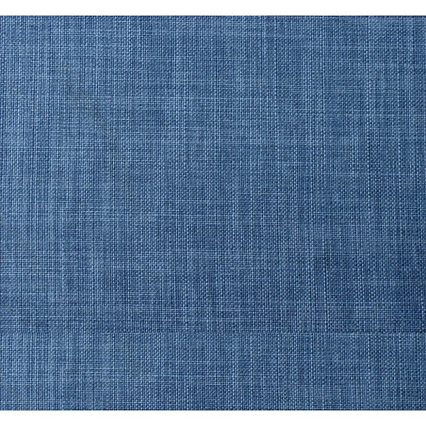
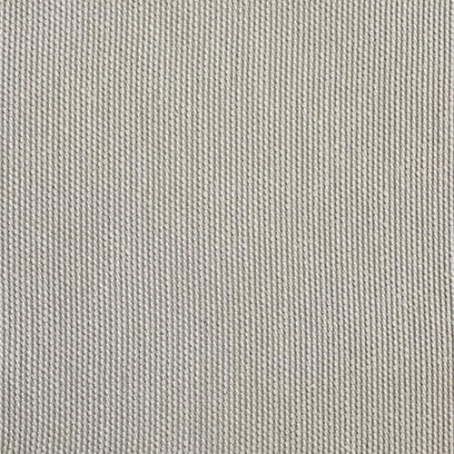

Características Gruesa, fuerte, versátil y muy resistente. Así es el tejido chenille muy utilizado como tela para tapizar sillas y sofás.
Sus características la hacen perfecta para este tipo de uso, ya que su gran aguante no está reñido con su flexibilidad

Lienzo
El popular lienzo es una tela multipropósito, de mucha durabilidad, compuesta en su mayoría por algodón y en casos como este también con poliester,
por lo general puede venir en color crudo o blanco dentro de los más comunes

Kansas Vision
Es una tela en la que se aprecian las fibras que la conforman, dándole una tonalidad dinámica dentro de la gama de cada color. Al tacto, la tela rústica no es tan suave como el chenille, es un género semi rustico y natural,
lo que lo ha puesto dentro de las telas más utilizadas hoy en la decoración y manualidades.